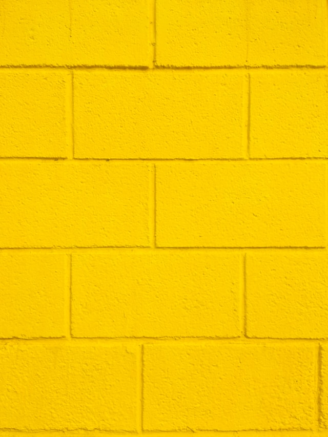
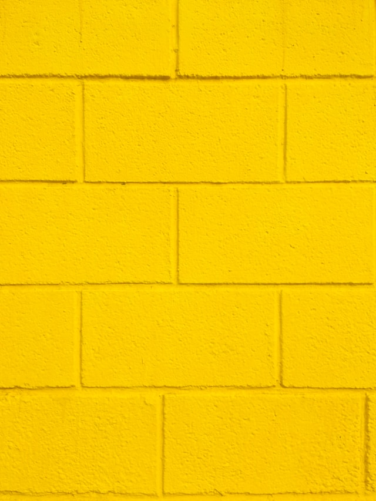

What is Yellow?
Yellow is a mix between green and orange. In traditional art theory, yellow is considered one of the primary colors. Yellow was one of the first colors used in art through orche, a natural clay pigment found all over Earth. Yellow is often associated with happiness, glory, and cowardice. The color yellow can be found in many areas of nature, such as corn, daffodils, ducklings, and even the sun.
 



Fun Facts:
- The Yellow Kid, also know as Mickey Dugan, was one of the first Sunday comic strip characters in an American Newspaper.He was called this due to the large yellow nightshirt that he wore.
- One of the most famous songs by The Beatles is Yellow Submarine.
- The color safety yellow is often used on warning signs, guard rails, and other objects to warn others of potential harm and avoid accidents. Its HEX code is #EED202.